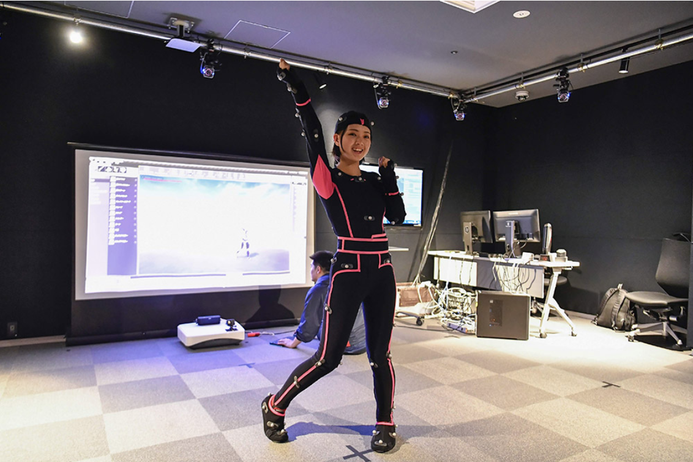
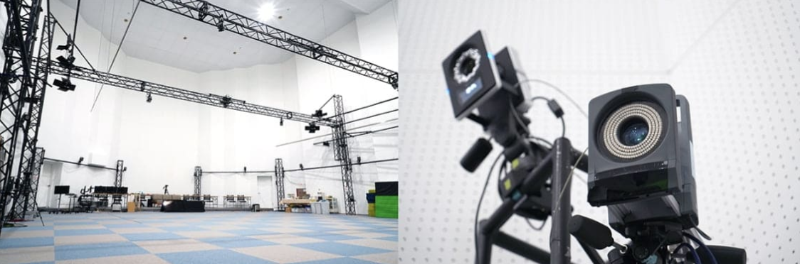
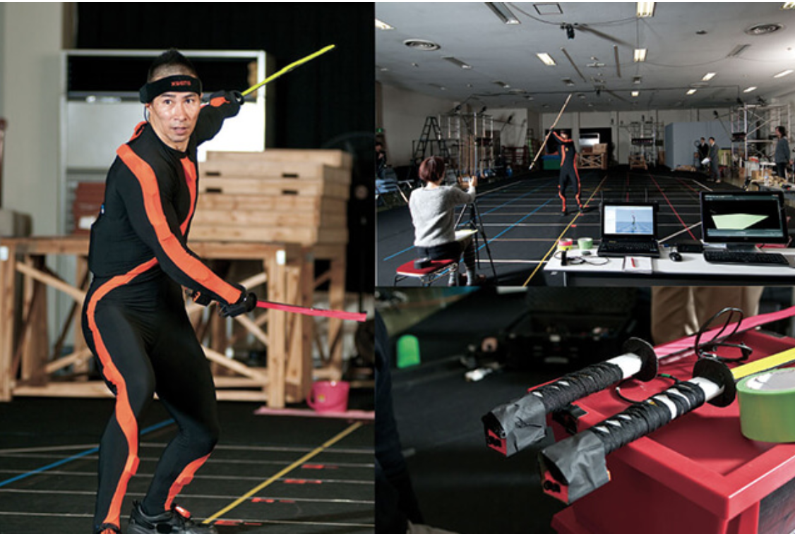
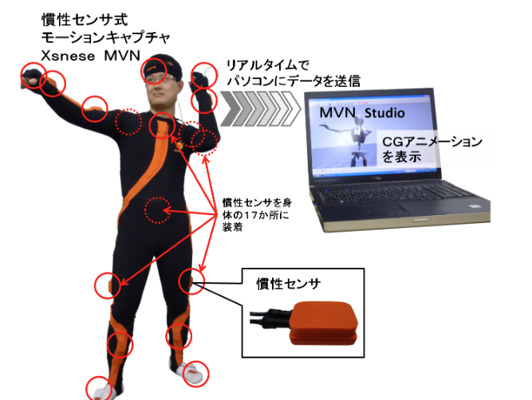
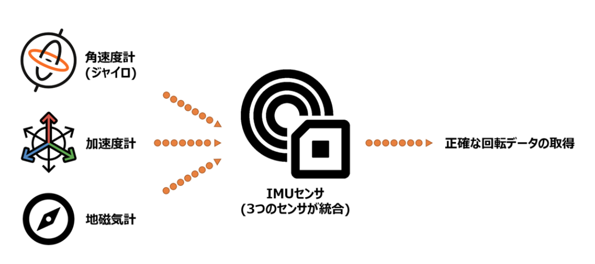
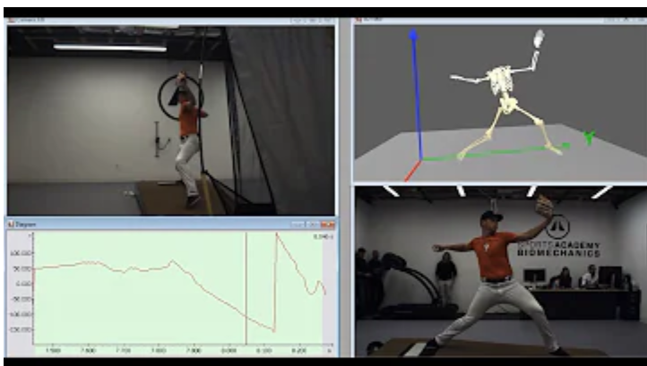
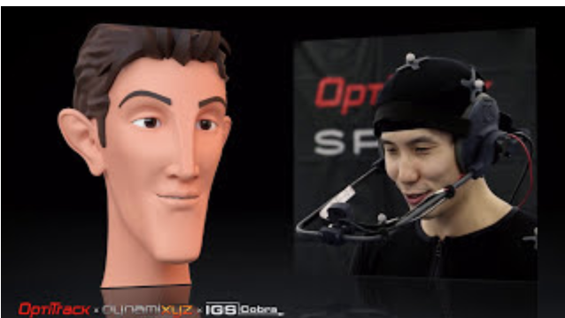
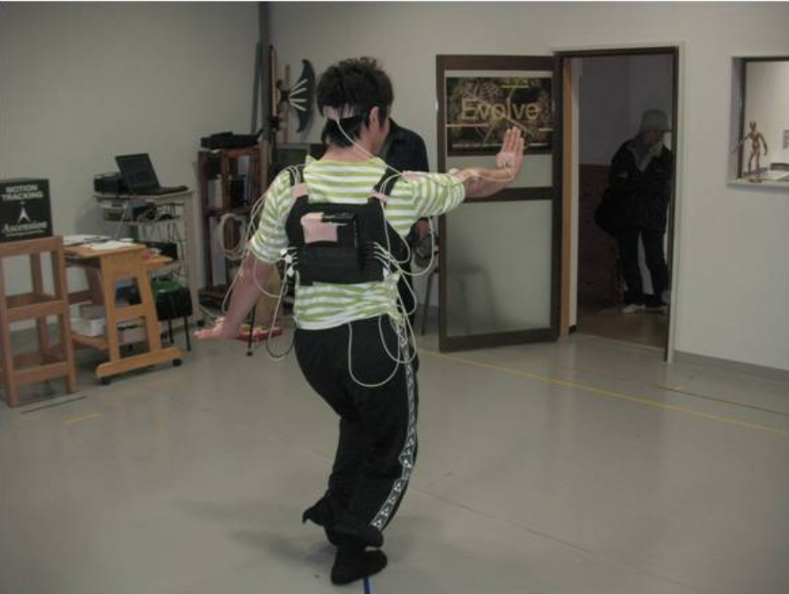
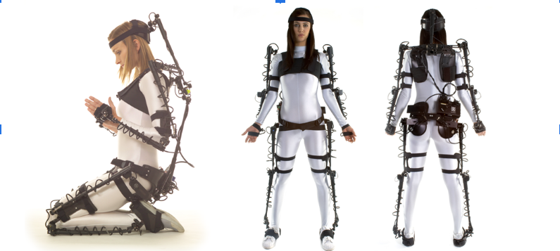

2023 Born Digital, INC. ALL RIGHTS RESERVED. https://cgworld.jp/feature/201905-gree-vrsionup3.html
東映ツークン研究所 https://zukun-lab.com/services/mcfc/
東映ツークン研究所 https://cgworld.jp/feature/interview/mvn004.html
株式会社スパイス https://mocap.jp/about-mocap/
株式会社スパイス https://mocap.jp/about-mocap/
東北伝統芸能アーカイブス モーションキャプチャについて｜デジタルアーカイブ研究情報
株式会社スパイス 【モーションキャプチャとは？】原理や活用シーンを種類別に解説 |
モーションキャプチャーシステム販売｜
光学式
【概要】
光学式モーションキャプチャーシステムは、複数台のカメラを使ってマーカーの位置をトラッキングするシステムである。
【方法】
専用のカメラと光の反射率が高い球型マーカーを使用して計測する。カメラから紫外線を照射し、反射マーカーが光を反射することで、座標を割り出す。カメラを複数台使用し、三角測量の原理で三次元の座標を算出する。位置精度が高く、マーカーを付けることで人やモノをキャプチャーできるので、現在最も幅広い分野で活用されている。


慣性式
【概要】
慣性式モーションキャプチャーシステムは、慣性センサを身体に装着し、センサから得た加速度・角速度・方位の情報を骨格モデルに当てはめることで身体の動きを計測するシステムである。
【方法】 身体に装着した慣性センサから得た加速度・角速度・方位の情報を骨格モデルの各セグメント（骨）とジョイント（関節）の動きに当てはめ、身体の動きを計測する。 動きを検知する慣性センサの代表として、加速度計や角速度計（ジャイロセンサ）が一般的だが、モーションキャプチャーにはその2つのセンサに地磁気計も加わった9軸の慣性センサが使用される。ものによっては気圧計も含まれた10軸センサを使用するものもある。
加速度計：直線的な動きの方向と量を測定
角速度計（ジャイロ）：回転した動きの方向と量を測定
地磁気計：地球をとりまく地磁気を検出することで方角を測定
【方法】 身体に装着した慣性センサから得た加速度・角速度・方位の情報を骨格モデルの各セグメント（骨）とジョイント（関節）の動きに当てはめ、身体の動きを計測する。 動きを検知する慣性センサの代表として、加速度計や角速度計（ジャイロセンサ）が一般的だが、モーションキャプチャーにはその2つのセンサに地磁気計も加わった9軸の慣性センサが使用される。ものによっては気圧計も含まれた10軸センサを使用するものもある。
加速度計：直線的な動きの方向と量を測定
角速度計（ジャイロ）：回転した動きの方向と量を測定
地磁気計：地球をとりまく地磁気を検出することで方角を測定



画像式（ビデオ式）
【概要】
ビデオ式モーションキャプチャーシステムは複数台のカメラを使って人の動きをトラッキングするシステム。マーカーレスでも計測が可能である。マーカーを付けて計測した方が高精度である。
【方法】 複数台のカメラを使用して、光学式と同じくキャリブレーションを行います。 （光学式では赤外線カメラを使用しますが、基本的にはビデオ式で使用するのはビデオカメラやハイスピードカメラです。）撮影された画像から対象物と背景を分離させてシルエットを抽出します。抽出されたシルエットを基に自動で骨格モデルを作成します。3Dジョイントの位置と角度を抽出して、関節角度などのデータを提供します。 光学式のベースとなる計測方式。 複数台のカメラから、3次元座標を算出するために、DLT法（direct linear transformation法）により3次元空間を定義し、各部位の3次元座標を算出。
【方法】 複数台のカメラを使用して、光学式と同じくキャリブレーションを行います。 （光学式では赤外線カメラを使用しますが、基本的にはビデオ式で使用するのはビデオカメラやハイスピードカメラです。）撮影された画像から対象物と背景を分離させてシルエットを抽出します。抽出されたシルエットを基に自動で骨格モデルを作成します。3Dジョイントの位置と角度を抽出して、関節角度などのデータを提供します。 光学式のベースとなる計測方式。 複数台のカメラから、3次元座標を算出するために、DLT法（direct linear transformation法）により3次元空間を定義し、各部位の3次元座標を算出。


磁気式
「磁界発生装置」と磁気センサーを使用する計測方式。
磁界発生装置とセンサーの両方にコイルが組み込まれている。
磁界発生装置から2種類の磁界を発生させて計測を行う。
磁界を使用するため、金属などが近くにあると計測が難しいことが難点。

機械式
機械的に角度を計測するポテンションメーターや、エンコーダの回転数などを使用して、身体の姿勢を推定する方式。
ワイヤレスで計測等は簡単であるが、機器を直接身体に装着し計測を行うため、動作などに制限が出る可能性が高い。
